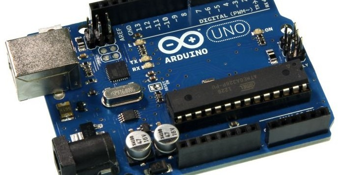
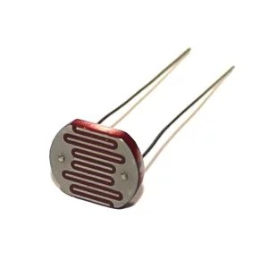
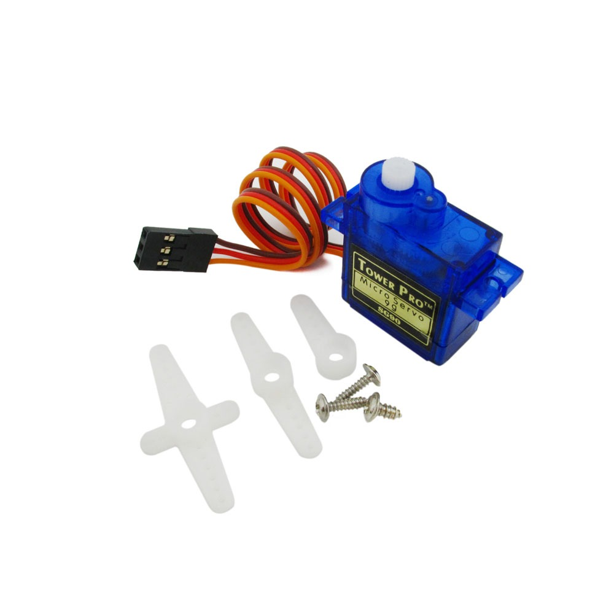
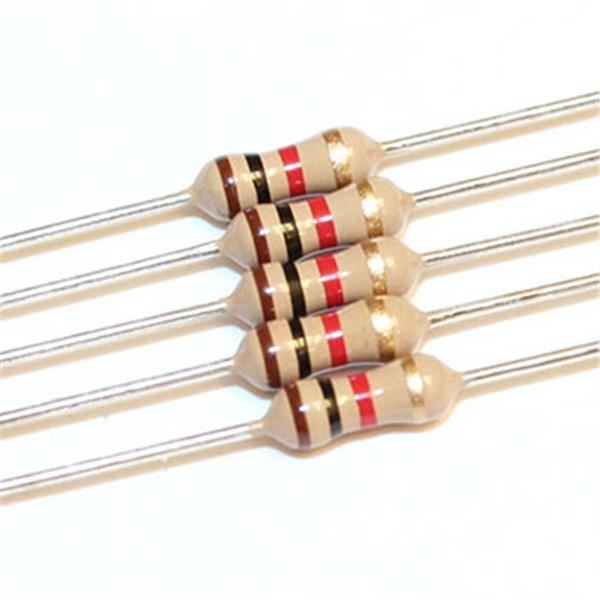
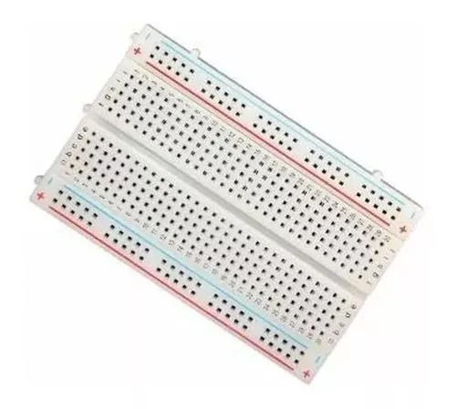
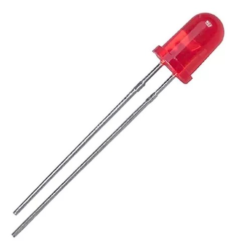
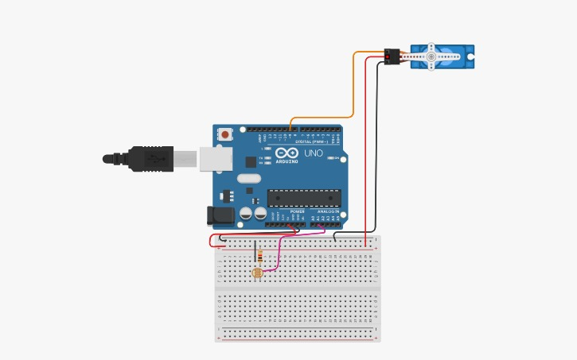
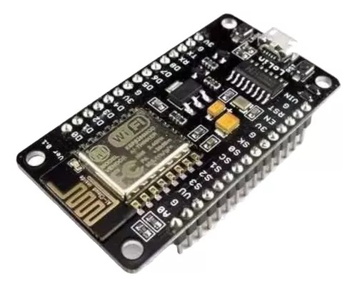
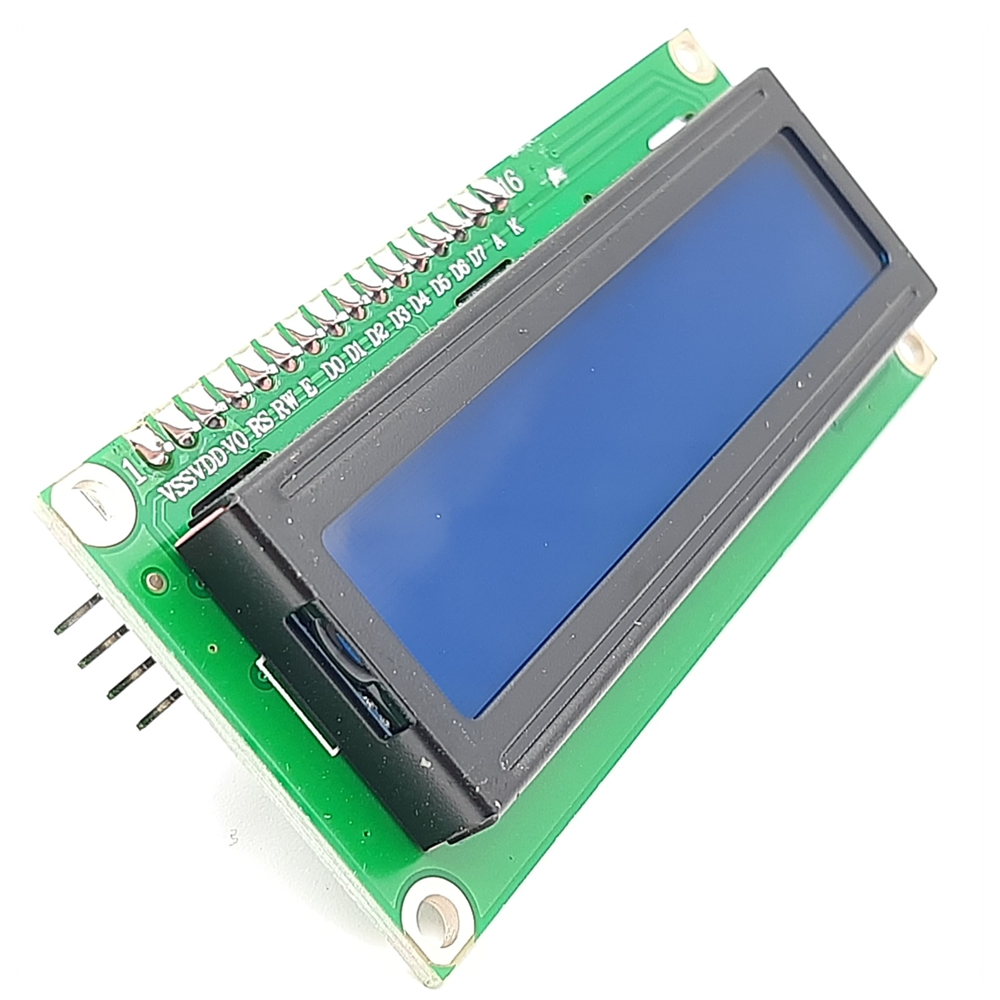
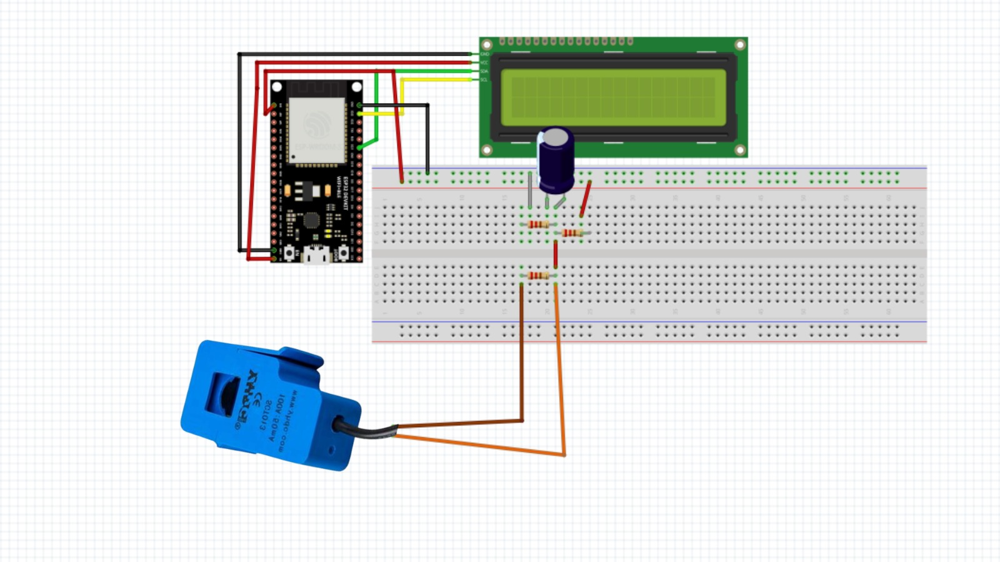

Como funciona o nosso projeto?
A ideia para o nosso projeto é construir um seguidor solar e um medidor de energia. O seguidor solar é controlado por um algoritmo que utiliza sensores para rastrear a posição do sol no céu. Esses dados são usados para mover os painéis solares em tempo real. Paralelamente, o medidor de energia coleta informações dos dispositivos conectados e fornece uma visão abrangente do consumo energético, permitindo ajustes e tomada de decisões informadas. Nosso projeto tem vastas possibilidades de aplicação, desde residências e comunidades até sistemas comerciais e industriais. Ele pode ser adaptado para uso em áreas remotas ou como parte integrante de redes elétricas urbanas.
Materiais e Código: Seguidor Solar
Desenvolvemos um seguidor solar que altera a posição dos módulos fotovoltaicos ao longo do dia, seguindo o caminho do sol, no nosso protótipo, seguiria de acordo com a luz no LDR.
Para criarmos esse projeto, usamos os seguintes materiais:
- Placa Arduíno Uno;
- 1 LDR;
- 1 Micro Servo 9g Sg90;
- 1 Placa Solar 107x61MM;
- 1 Resistor 1 kΩ;
- 1 Protoboard;
- 1 LED Vermelho
Arduino é uma plataforma de prototipagem eletrônica, serve para facilitar o aprendizado de programação, ensinando as pessoas a desenvolverem projetos de eletrônica e de robótica, automatizar escritório, criar um novo brinquedo ou jogos, etc.
O LDR (Light Dependent Resistor) também é conhecido como fotoresistor, é um tipo de resistor que tem a capacidade de variar a sua resistência em função da intensidade de luz que incide sobre ele.
O Micro Servo Motor SG90 9g é um item essencial para projetos de robótica, mecatrônica e diversos outros projetos.
Os resistores são componentes passivos que compõem os circuitos elétricos. A sua finalidade é limitar o fluxo de corrente elétrica em um determinado circuito, além de realizar a conversão de energia elétrica em energia térmica através do efeito joule.
Uma placa de ensaio ou matriz de contato (protoboard ou breadboard em inglês) é uma placa com furos e conexões condutores utilizada para a montagem de protótipos e projetos em estado inicial.
O LED vermelho geralmente serve como indicador de status ou sinalização intermediária durante a execução do programa. Pode ser programado para fornecer informações visuais sobre diferentes estados do sistema ou para sinalizar eventos específicos, contribuindo para a depuração e interação com o dispositivo.
Para a montagem do seguidor solar, criamos um esquema por meio do site Tinkercad, conforme a imagem abaixo:
O nosso esquema foi criado seguindo as informações do código:
#include <Servo.h>
Servo servoX;
Servo servoY;
int ldr1Pin = A0; // LDR 1 pino
int servoYPin = 10; // Pino servo Y
int ldr1Value;
int servoYAngle;
void setup() {
servoY.attach(servoYPin);
}
void loop() {
ldr1Value = analogRead(ldr1Pin); // Ler os valores do LDR
servoYAngle = map(ldr1Value, 0, 1023, 0, 180); // Mapeie valores LDR para ângulos do servo
servoY.write(servoYAngle) // Definir ângulos de servo
delay(50);
}
A função loop() é onde o código principal é executado em um loop contínuo após a inicialização. ldr1Value recebe o valor lido do sensor LDR usando a função. analogRead(ldr1Pin), que converte a leitura analógica para um valor digital. Em seguida, o valor lido do LDR é mapeado para um ângulo de servo utilizando a função map(). Isso permite que a variação do sensor LDR seja convertida em uma faixa de ângulos entre 0 e 180 graus, adequada para o servo motor. servoY.write(servoYAngle) envia o ângulo calculado para o servo Y, fazendo-o mover-se para a posição correspondente. delay (50) introduz um pequeno atraso de 50 milissegundos entre as iterações do loop, permitindo um controle suave do servo e evitando movimentos bruscos.
Materiais e Código: Medidor de Energia
Também desenvolvemos um medidor de energia para medir a potência no ciclo de vida do dispositivo. Para fazer esse projeto, usamos os seguintes materiais:
- ESP8266;
- 1 Sensor de corrente não invasivo SCT-013;
- 2 resistores de 10 kΩ;
- 1 resistor de 33 kΩ;
- 1 Capacitor Eletrolítico de 100uf X 200v;
- 1 LCD 16x2 com Backlight Azul e escrita branca.
O ESP8266 é um microcontrolador que pode fornecer a qualquer projeto a capacidade de conexão wireless com a internet.
Sensor de corrente não invasivo de 30A AC - SCT-013-030 é um sensor que lê a corrente de forma não intrusiva através do efeito Hall. Ele lê corrente até 30A de forma simples e rápida sem interromper o circuito via Arduino ou Pic.

Um resistor de 10K é um dispositivo amplamente utilizado em equipamentos elétricos e circuitos eletrônicos. Com ele, você pode gerar calor, limitar a corrente e criar quedas de tensão. Um resistor é um componente cujo objetivo é bloquear o fluxo de eletricidade através de seu material.

Um resistor de 33k ohms é um componente eletrônico que oferece uma resistência de 33.000 ohms à passagem de corrente elétrica. Ele é utilizado para controlar a intensidade da corrente em circuitos eletrônicos, ajustando a tensão ou limitando o fluxo de elétrons. Sua cor de faixa é laranja, laranja e laranja, indicando o valor e a tolerância.

O nome completo do LCD é "Liquid Crystal Display". Este é o padrão de tela para muitos dispositivos portáteis, como TVs, laptops ou tablets. O LCD é a parte frontal que produz as cores e forma a imagem da tela, e o que muda é o padrão de luz de fundo. As telas LCD usam cores projetadas em transparências, ou seja, não emitem luz. Portanto, a tela precisa de uma fonte de luz (backlight) localizada na parte traseira para exibir a imagem. No Arduino, eles permitem a visualização dos dados processados por um determinado dispositivo. Em geral, são frequentemente utilizados em projetos que requerem a leitura de informações obtidas por sensores ou sistemas.
Segue o esquema do medidor de energia
O esquema segue o seguinte código:
#include"EmonLib.h"
#include <Wire.h>
#include <LiquidCrystal_I2C.h>
EnergyMonitor SCT013;
int pinSCT = A1; //Pino analógico conectado ao SCT-013
int tensao = 127;
int potencia;
// Inicializa o display no endereco 0x27
LiquidCrystal_I2C lcd(0x27,16,2);
void setup()
{
SCT013.current(pinSCT, 60.607);
lcd.init();
lcd.setBacklight(HIGH);
}
void loop()
{
double Irms = SCT013.calcIrms(1480); // Calcula o valor da Corrente
potencia = Irms * tensao; // Calcula o valor da Potencia Instantanea
lcd.clear();
lcd.setCursor(0,0);
lcd.print("Corr. = ");
lcd.print(Irms);
lcd.print(" A");
lcd.setCursor(0,1);
lcd.print("Pot. = ");
lcd.print(potencia);
lcd.print(" W");
delay(500);
}
O código inicia com a inclusão de bibliotecas essenciais: "EmonLib" para medição de energia, "Wire" para comunicação I2C e "LiquidCrystal_I2C" para controle do display LCD. Declarações iniciais incluem a definição do pino do sensor SCT-013 e um valor de tensão fictício. No bloco de configuração setup(), o sensor SCT-013 é configurado com uma calibração de corrente específica, e o display LCD é inicializado com as dimensões corretas. Dentro do ciclo principal loop(), a corrente eficaz é calculada usando calcIrms() da EmonLib. A potência instantânea é obtida multiplicando essa corrente pela tensão fictícia. As informações são então exibidas em duas linhas distintas do display LCD.